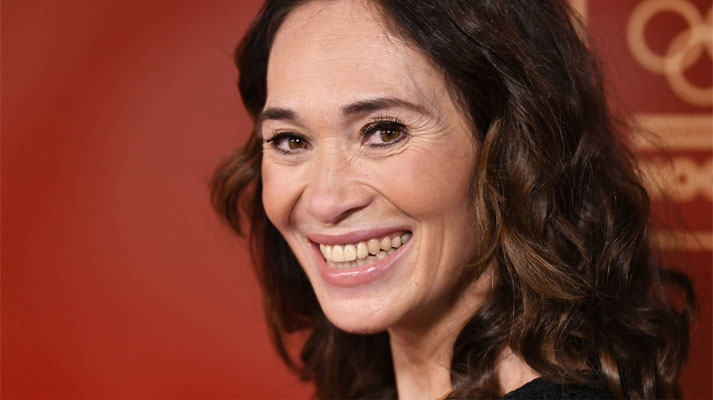

Liefde en respect voor overleden sportheld Mentel: 'Een voorbeeld voor ons allen'
Bibian Mentel op het sportgala in 2018
De dood van snowboardster Bibian Mentel, die maandag op haar 48ste overleed aan de gevolgen van kanker, maakt veel los. De drievoudig paralympisch kampioene en voorvechtster van de gehandicaptensport was een inspiratiebron voor velen.
"Ze sprak als topsporter tot de verbeelding", zei technisch directeur Maurits Hendriks van NOC*NSF op NPO Radio 1. "Ik keek niet naar haar als paralympisch sporter, maar als een van de topsporters van Team NL. De beperking viel weg. Ze doorbrak grenzen."
Premier Mark Rutte schrijft op Twitter dat hij bedroefd is door het overlijden van Mentel. Hij noemt haar een "voorbeeld voor ons allen".
Bedroefd door het overlijden van @BibianMentel. Een icoon van de Nederlandse Paralympische sport. Met haar positiviteit en immense doorzettingsvermogen een voorbeeld voor ons allen. Ik wens haar nabestaanden veel sterkte met dit grote en verdrietige verlies.
— Mark Rutte (@MinPres) March 29, 2021
Minister Hugo de Jonge noemt Mentel "niet alleen een paralympisch kampioen, maar een kampioen in het leven."
Bibian Mentel ging door waar anderen stopten. Niet alleen een paralympisch kampioen, maar een kampioen in het leven. Wát een voorbeeld, we gaan je missen. 🙏🏼 pic.twitter.com/q1199c7j1h
— Hugo de Jonge (@hugodejonge)March 29, 2021
Esther Vergeer, chef de mission van de Nederlandse paralympische ploeg en net als Mentel meervoudig paralympisch kampioen, reageert in het Sportforum van NPO Radio 1. "Bibian was een van de krachtigste vrouwen die ik ooit heb leren kennen."
"Zij kon het positieve inzien van alles wat het leven te bieden heeft. Tot het laatste moment heeft ze maximaal genoten. Dat is een waardevolle les voor ons allemaal. En ze heeft laten zien dat als je ergens van droomt en je ergens voor vecht, je ver kunt komen."
Vergeer over Mentel: 'Dankzij haar vechtlust snowboarden op paralympische spelen'
NOS Sport-verslaggever Edwin Peek volgde Mentel jarenlang, maakte een documentaire over haar en ging vorige week dinsdag nog langs voor een afscheidsinterview. Peek leerde haar van dichtbij als een "ontzettend lief mens" kennen.
"Zij straalde positiviteit uit, met alles wat ze deed. In haar liefde voor mensen, voor haar omgeving. En altijd naar anderen kijken. Dan vroeg ze meteen hoe het met mij was, terwijl ik dacht: ja, met mij is het wel goed, maar is het voor jou allemaal wel te doen?!"
Ook op Twitter laten prominente Nederlanders uit de sport van zich horen om hun respect voor Mentel en haar nabestaanden te tonen.
Rust zacht lieve @BibianMentel . Bedankt voor al je inspiratie, je bent een geweldig mens❤️
— Ireen Wüst (@Ireenw) March 29, 2021
‘Verdriet is goed, maar je moet er niet in verdrinken’, zei je. Dank voor alles dat je hebt gegeven en met ons gedeeld. Iedereen die je hebt geraakt met je optimisme en doorzettingskracht is een beter mens geworden. Rust zacht. https://t.co/iYmnfyHj4o
— Constantijn van Oranje (@constantijn14) March 29, 2021
Mooie herinneringen aan #bibianmentel hier tijdens @LaureusSport @LaureusNL Awards waar zij genomineerd was voor een Laureus Sport Award. Wat een bijzondere, immer optimistische en sterke vrouw. Groot gemis pic.twitter.com/XbKAhhTbb0
— Pieter-Christiaan (@PCvanOranje) March 29, 2021
Bibian dank voor alles wat je mij hebt geleerd maar bovenal hoe je hebt geïnspireerd ❤️ https://t.co/zDZqZ3JPXT#bibianmentel #bibian pic.twitter.com/ZJGGZWuvBt
— Chris Vos (@Chris_Vos_) March 29, 2021
Lieve @BibianMentel , tot de volgende keer.. ❤️
— Erben Wennemars (@erbenwennemars) March 29, 2021
Dank voor je energie en positiviteit Bibian! https://t.co/EW66Rcb3Bb
— Jochem Uytdehaage 🔋🚴♂️ (@uytdehaage) March 29, 2021
Lieve Bibian, zonder jou voelen we ons leeg. Je keek naar mogelijkheden, naar kansen en dromen najagen. Je bent een groot voorbeeld voor alle kinderen met een beperking, maar ook voor ons. We gaan je missen 💛 pic.twitter.com/o1TTvGPejg
— Johan Cruyff Foundation (@JCFoundation) March 29, 2021
R.I.P. Een fantastische, bewonderenswaardige vrouw is niet meer. https://t.co/SQbKtfjQCK
— Jack van Gelder (@jackvangelder) March 29, 2021
Verzamel herinneringen en geen bezittingen..
— Hélène Hendriks (@hendrikshelene) March 29, 2021
Rust zacht Bibian...
Ik ben zo dankbaar dat ik vorige week nog op de rand van je bed mocht zitten om samen te lachen, te huilen en om te zeggen dat we van elkaar houden al wist ik dat de ‘tot de volgende keer’ niet meer ging lukken.
— Samantha Steenwijk (@Samantsteenwijk) March 29, 2021
Ik zal je voor altijd missen lieve vriendin ❤️@BibianMentel pic.twitter.com/GVTK4IvyPh
Rust zacht lieve Bibian....
— Humberto Tan (@HumbertoTan) March 29, 2021
Vanmiddag overleed Bibian Mentel. 21 jaar leefde ze met kanker, maar was altijd positief, hoopvol en haalde zoveel mogelijk uit iedere dag. Wij hebben enorm veel respect voor hoe zij in het leven stond en voor haar tomeloze inzet voor de kankerbestrijding. https://t.co/dxwfVZSGL7
— KWFKankerbestrijding (@kwf_nl) March 29, 2021
We are mourning the loss of a true Paralympic legend.
— Paralympic Games (@Paralympics) March 29, 2021
“What Bibian Mentel-Spee did for Para sport in general, let alone Para Snowboard, is immeasurable and words simply cannot do her or her achievements justice."
Bibian, forever in our hearts 🧡
🔗 https://t.co/uLDO6dKRkV pic.twitter.com/RszLXEAhxE